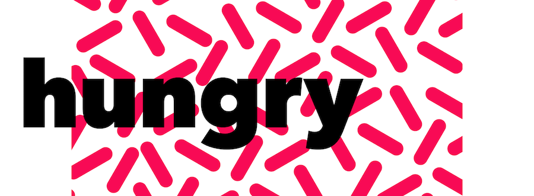
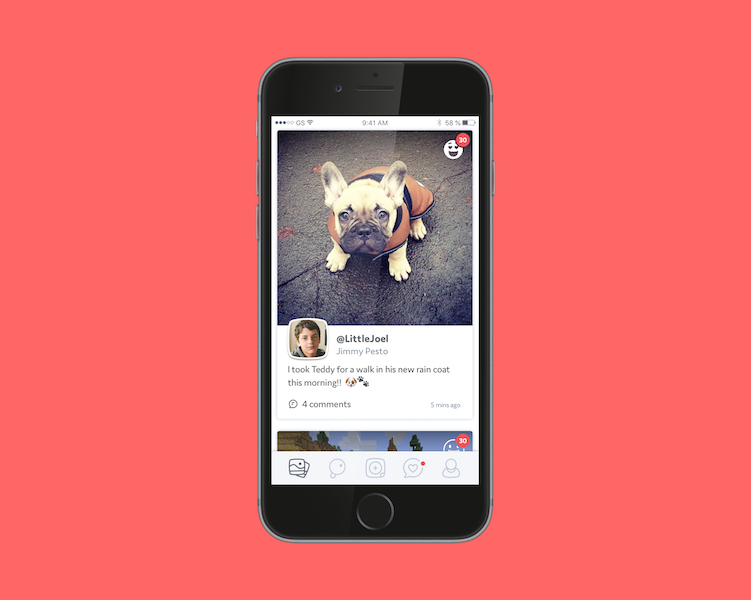
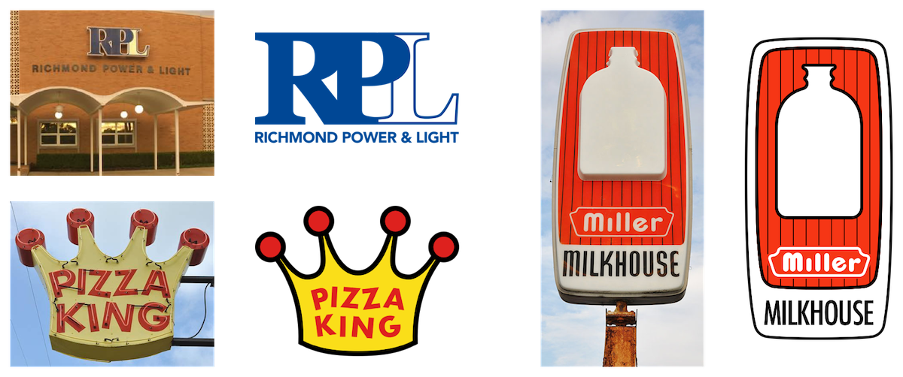
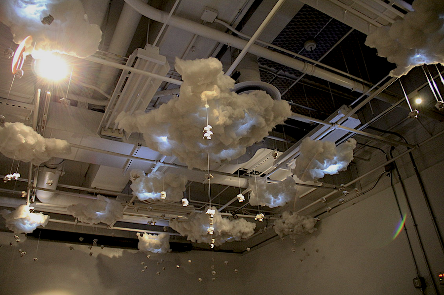

Jordan Hartley Braun
Designers should
balance
simplicity &
completeness
fun &
focus
heritage &
innovation
tension &
enjoyment
details &
big ideas
intuition &
fascination
I am interested in the relationships people have with products, services, and brands.
I want to create experiences that evoke warm feelings of nostalgia for the familiar,
and excitement for the unexpected.
The teams that I lead are committed to the big picture, and we understand that means sweating the small stuff.
We think and create in components and systems. This ensures that our solutions are scalable and the user enjoys consistent behaviors and patterns.
Due to non-disclosure agreements, my ability to showcase my work publicly is limited.
Please contact me at jordan@jhbraun.com if you are interested in hearing more about my work and design process.
//
Sports Car
An iOS app for a German car company. I led a small design and development team in the creation
of an app focused on navigation. We created a design system that was sleek and modern, but tied to the heritage of the brand.
//

Hungry
Hungry was a research and prototyping contract that was completed in a 2 week sprint.
The client came to me with some rough ideas about using images rather than names when choosing food for delivery/take-out.
Read the case study
//

Kudos
A social network for kids. I led a small design team in the creation of the Kudos brand and app experience.
This included a design system, prototypes, and brand guides.
I worked closely with stakeholders, including ex-Pixar and Disney executives, on product strategy and product roadmaps.
//

Hometown Logos
When I'm feeling nostalgic, I like to vectorize logos and signs from my hometown in Indiana.
My goal is stay true to the spirit of the original designs and keep the improvements subtle.
//

Sheep
I worked with ceramics artist, Anita Su, to create this installation.
Anita casted and glazed over 100 porcelain sheep.
I programmed several Arduinos to control LEDs and servo motors to create the lighting effects in the clouds and give movement to the sheep.
//